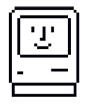
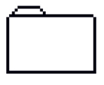

**[Your Full Name]** 👨💻
**Role/Title:** Backend developer
**Location:** Buenos Aires, Argentina
 My Projects
-
**[Project 1 Name]** (View):
[Short description of Project 1]
-
**[Project 2 Name]** (View):
[Short description of Project 2]
-
**Skills:** HTML, CSS, JavaScript, Python, [Other Skills]
Contact